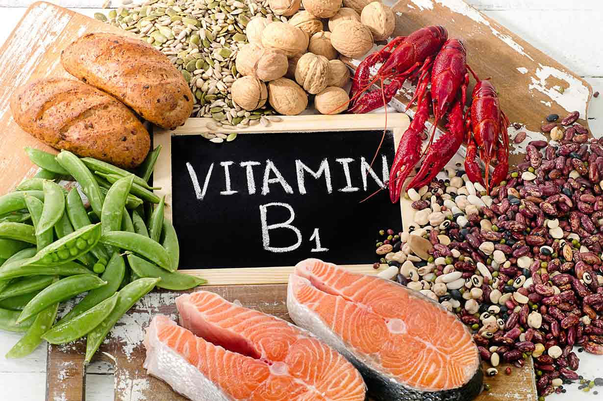
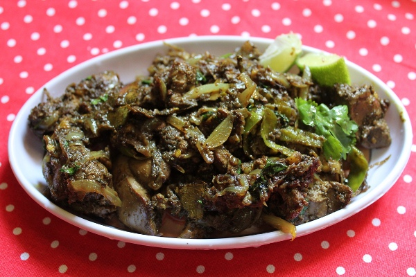

Isolated in 1926, thiamin (also known as vitamin B1) gets its name from "thio," meaning sulfur, and "amine," the nitrogen-containing group in the amine. Thiamin consists of a sulfur-containing ring and a nitrogen-containing ring attached to a carbon atom. Heat easily breaks the bonds between the two rings and the carbon atom, so cooking reduces food's thiamin content. Alkaline solutions (those with a pH of 8 or higher) do not break these bonds.
Thiamin pyrophosphate (TPP) is a coenzyme of which the vitamin thiamin is a part. It plays a key role in decarboxylation and helps drive the reaction that forms acetyl CoA from pyruvate during metabolism.
Decarboxylation is the removal of a carboxyl group (-COOH) from a molecule. The carboxyl group is then released as carbon dioxide (CO2). Thiamin pyrophosphate also plays a role in nerve function, although the mechanism is still under investigation. Scientists suspect that TPP helps synthesize and regulate neurotransmitters, chemicals involved in the transmission of messages throughout the nervous system. TPP also may help produce energy to fuel nerve tissue.
Pork.
Legumes.
Nuts and seeds.
Fish and seafoods.
Meat.
Dairy products.
Fruits.
Sunflower seeds.
BeriBeri is a thiamin-deficiency disease. Symptoms include muscle weakness, loss of appetite, nerve degeneration, and edema in some cases.
Alcohol-induced malnutrition is the most common cause of Wernicke-Korsakoff syndrome, another thiamin-deficiency disease. Symptoms include mental confusion, staggering, and constant rapid eye movements or paralysis of the eye muscles. Although the syndrome most often is associated with the stereotypical “Skid Row” alcoholic, it can occur in any heavy drinker, especially an aging alcoholic.
Ingredients:
200 grams Liver.
2 tbsp Oil.
1 Bay Leaf.
1 tsp Fennel Seeds.
1 stick Cinnamon Stick.
1 large Onion, sliced thinly.
6 cloves Garlic, sliced.
2 Green Chilies, chopped finely.
2 tbsp Coriander leaves, chopped.
Lemon Juice as needed.
Salt to taste.
Spice Powders:
1 tsp Turmeric powder.
1 tbsp Coriander powder.
2 tsp Pepper powder.
1 tsp Cumin Powder.
1 tsp Garam masala powder.
